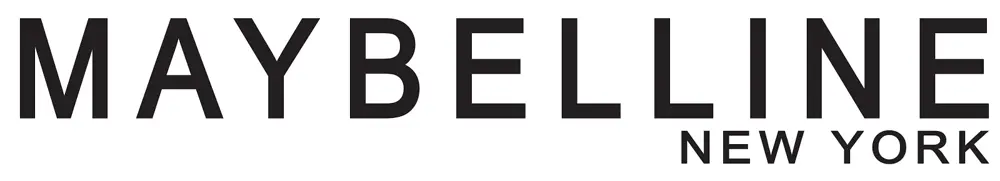
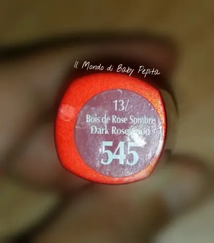
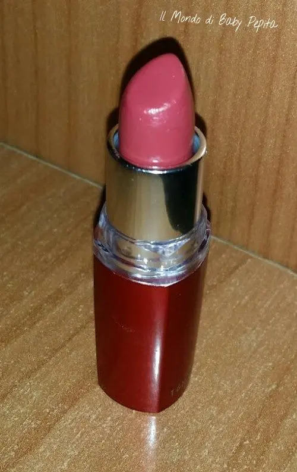
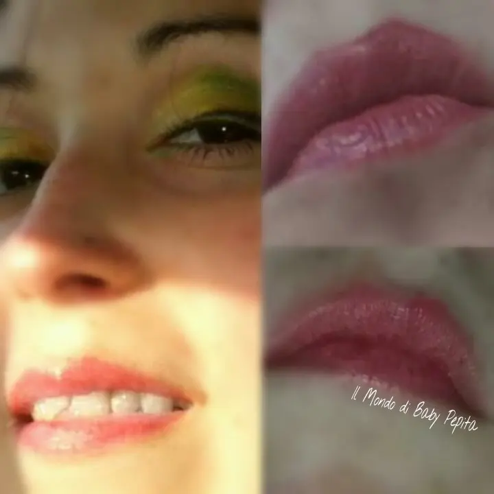

ROSSETTI che passione - Maybelline Hydra Supreme
Salve ragazzeeeee. .
Conoscete tutte la nota marca Maybelline no?

Quindi oggi non sarò qui a dieci una novità ma bensì a confermare la qualità ..
Un pò di mesi fa vinsi un Giveawey makepposo e all'interno c'era appunto un bellissimo rossetto Maybelline. .
Vi parlo dunque di
Hydra Supreme - 13/Bois de rose sombre Dark rosevood - n•545

Si tratta di uno splendido rosso non carichissimo ma che è nato per essere appunto idratante..
Perché ti piacerà il colore ricco e intenso poichè scivola voluttuoso sulle labbra HYDRA SUPREME ROSSETTO IDRATANTE riempendole di seduzione.

• Con Burro di Karitè, Allantoina, vitamina E e Olio di Jojoba, per labbra idratate fino a 8 H.
• Con collagene in micro-sfere, per un colore ricco e pieno.
• 14 intense colorazioni.
Per un risultato ottimale
ROSSETTO IDRANTANTE DAL COLORE PIENO E DALLA TEXTURE ULTRA CONFORTEVOLE. .

In effetti idrata che è una meraviglia e anche se non sta su tutte le ore che dice, le labbra restano colorate anche se in modo chiarissimo. .
Niente da dire a questo rossetto. .
Mi è piaciuto molto. .
Effetto sulle mie labbra :
